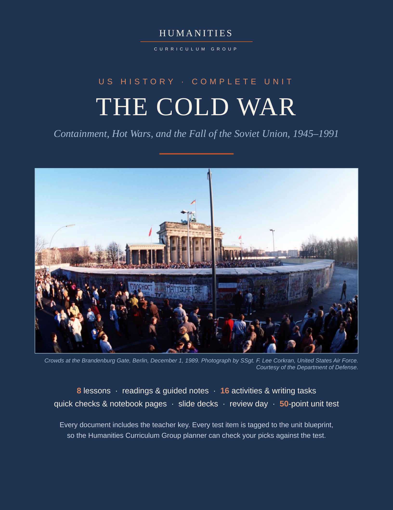

The thirteenth unit in the course, included with All-Access. Eight lessons, a review day, and the unit test, fifty-one documents in all, plus a slide deck with full speaker notes and a teacher notes document for every lesson. Every PDF includes the teacher key, and every document follows the same print standard as the sample unit: black text, open writing space, no ink-heavy design. If you are new here, the Progressive Era unit is the free sample, and it runs on the same plate and the same planner. Primary source work for this unit lives in the bank at The Primary Source Project, which holds audited sources for this era.
Get this unit with All-Access See the free sample unit Plan this unit
The unit opens in the wreckage of the alliance that won the Second World War. The United States and the Soviet Union had been partners of necessity, divided by ideology long before 1945, and the war's end left Soviet armies standing in Eastern Europe and American and British armies in the West. The unraveling comes in sequence: the broken pledges over Poland, Soviet pressure on Iran and Turkey, and the two statements that named the new reality in 1946, Kennan's Long Telegram and Churchill's Iron Curtain speech at Fulton. Then the answer taking shape: the Truman Doctrine, the Marshall Plan, the Berlin Airlift, and NATO.
The strategy met its first tests in Asia. The Communist victory in China and the Soviet atomic bomb, both in 1949, set up NSC-68 and then the war in Korea, an undeclared war fought under the United Nations flag for limited aims, from Inchon to the Yalu, China's intervention, and stalemate, closing on the fight over MacArthur's dismissal and civilian control. At home the same years built the machinery of fear: the federal loyalty program, the House Un-American Activities Committee and the Hollywood Ten, the blacklist, the Hiss and Rosenberg cases, and Senator Joseph McCarthy's rise and fall in the televised Army-McCarthy hearings and the Senate's censure.
The middle lessons sit under the nuclear shadow: the hydrogen bomb, massive retaliation, brinkmanship, covert action in Iran and Guatemala, the Warsaw Pact, and Sputnik. Cuba brings the crisis of October 1962, thirteen days worked from the documents, the U-2 photographs, Kennedy's address, the two Khrushchev letters, and a settlement with a public part and a secret part, closing on the hotline and the test ban the crisis built. Vietnam follows as the war containment built, from the division of 1954 and the domino theory through the Gulf of Tonkin Resolution, escalation past half a million troops, the Tet Offensive, Vietnamization, the Paris accords, and the fall of Saigon in 1975.
Détente eased the contest in the 1970s, the opening to China, SALT, and the Helsinki Accords, before Afghanistan collapsed the bargain and the confrontation returned with the buildup, the Reagan Doctrine, the evil empire speech, and the Strategic Defense Initiative. The final lesson weighs the end on the evidence: glasnost and perestroika, the INF Treaty, the crowds of 1989, reunification, the failed coup of August 1991, and the dissolution that December. The unit is organized around the essential question, “How did the struggle between the United States and the Soviet Union reshape the world and American life, and why did it end the way it did?” Each lesson has a reading, guided notes, slides with full speaker notes, an activity, a notebook page, a quick check, and a writing task. A review day gives students a study guide and crossword before the 50-point unit test. Every test item is tagged in the key to a published 15-entry blueprint, so students and teachers can see what the test asks and where that material was taught. The planner turns those choices into a calendar and checks the selected work against the blueprint, naming any gap while there is still time to close it.

Print it for the front of the unit packet, or keep it as the first page of the digital bundle. The cover ships with the unit in All-Access. The three previews further down show the full plate, two real pages from the lessons, and the test key's blueprint tags.
Test blueprint: origins: the wartime alliance breaks, the Long Telegram, and the Iron Curtain speech; containment as policy: the Truman Doctrine, the Marshall Plan, the Berlin Airlift, and NATO
Test blueprint: the Cold War turns to Asia: Communist victory in China, the Soviet bomb, and NSC-68; korea: intervention under the United Nations, Inchon, Chinese intervention, MacArthur's dismissal, and the armistice
Test blueprint: the machinery of fear: the loyalty program, HUAC and the Hollywood Ten, the blacklist, and the spy cases; mcCarthy and his fall: the Wheeling speech, McCarthyism, the Army-McCarthy hearings, and the censure
Test blueprint: the nuclear arms race: the hydrogen bomb, massive retaliation, brinkmanship, and the fear at home; the contest widens: covert action in Iran and Guatemala, the Warsaw Pact, Sputnik and the space race
Test blueprint: cuba before the crisis: Castro's revolution, the turn to Moscow, and the Bay of Pigs; thirteen days: the missile crisis, the quarantine, the two-part settlement, the hotline, and the test ban
Test blueprint: into Vietnam: the domino theory, the Gulf of Tonkin Resolution, and escalation; the war turns: the Tet Offensive, Vietnamization, the accords, the fall of Saigon, and the costs
Test blueprint: détente and its critics: China, SALT, Helsinki and human rights, and the Afghanistan shock; the second Cold War: the buildup, the Reagan Doctrine, the "evil empire," and the Strategic Defense Initiative
Test blueprint: the end: Gorbachev, glasnost and perestroika, 1989, reunification, and the dissolution of 1991
The test is 50 points: matching, multiple choice, and a source-based section built on President Harry S. Truman's Doctrine address of March 12, 1947, from the Public Papers text held by the Harry S. Truman Library, NSC-68 (April 1950), from the declassified report held by the Truman Library, and the United States Air Force U-2 reconnaissance photograph of the Soviet missile sites at San Cristobal, Cuba, October 14, 1962.
Three pages from the listing, built from the actual documents.
The fifteen entries the unit test assesses. Every assignment above is tagged to the entries it teaches, which is what the planner's coverage check reads.
| # | Blueprint entry | Taught in |
|---|---|---|
| 1 | Origins: the wartime alliance breaks, the Long Telegram, and the Iron Curtain speech | Lesson 1 |
| 2 | Containment as policy: the Truman Doctrine, the Marshall Plan, the Berlin Airlift, and NATO | Lesson 1 |
| 3 | The Cold War turns to Asia: Communist victory in China, the Soviet bomb, and NSC-68 | Lesson 2 |
| 4 | Korea: intervention under the United Nations, Inchon, Chinese intervention, MacArthur's dismissal, and the armistice | Lesson 2 |
| 5 | The machinery of fear: the loyalty program, HUAC and the Hollywood Ten, the blacklist, and the spy cases | Lesson 3 |
| 6 | McCarthy and his fall: the Wheeling speech, McCarthyism, the Army-McCarthy hearings, and the censure | Lesson 3 |
| 7 | The nuclear arms race: the hydrogen bomb, massive retaliation, brinkmanship, and the fear at home | Lesson 4 |
| 8 | The contest widens: covert action in Iran and Guatemala, the Warsaw Pact, Sputnik and the space race | Lesson 4 |
| 9 | Cuba before the crisis: Castro's revolution, the turn to Moscow, and the Bay of Pigs | Lesson 5 |
| 10 | Thirteen days: the missile crisis, the quarantine, the two-part settlement, the hotline, and the test ban | Lesson 5 |
| 11 | Into Vietnam: the domino theory, the Gulf of Tonkin Resolution, and escalation | Lesson 6 |
| 12 | The war turns: the Tet Offensive, Vietnamization, the accords, the fall of Saigon, and the costs | Lesson 6 |
| 13 | Détente and its critics: China, SALT, Helsinki and human rights, and the Afghanistan shock | Lesson 7 |
| 14 | The second Cold War: the buildup, the Reagan Doctrine, the "evil empire," and the Strategic Defense Initiative | Lesson 7 |
| 15 | The end: Gorbachev, glasnost and perestroika, 1989, reunification, and the dissolution of 1991 | Lesson 8 |